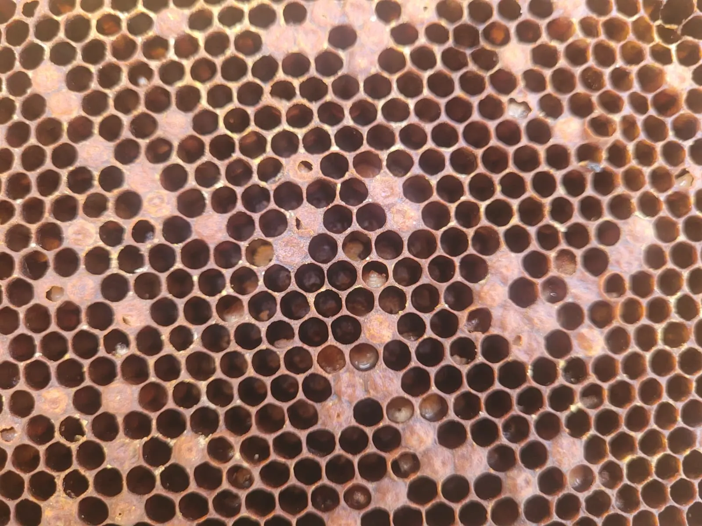
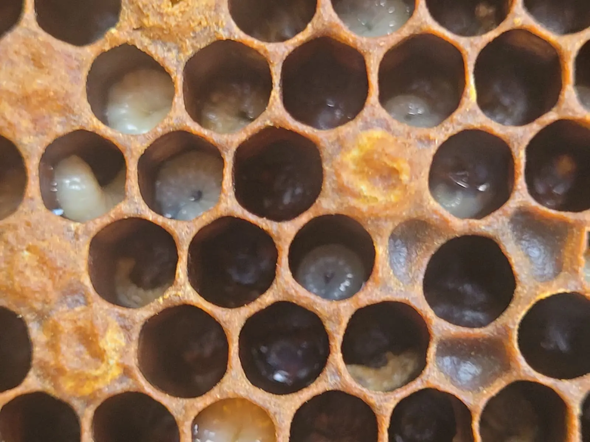
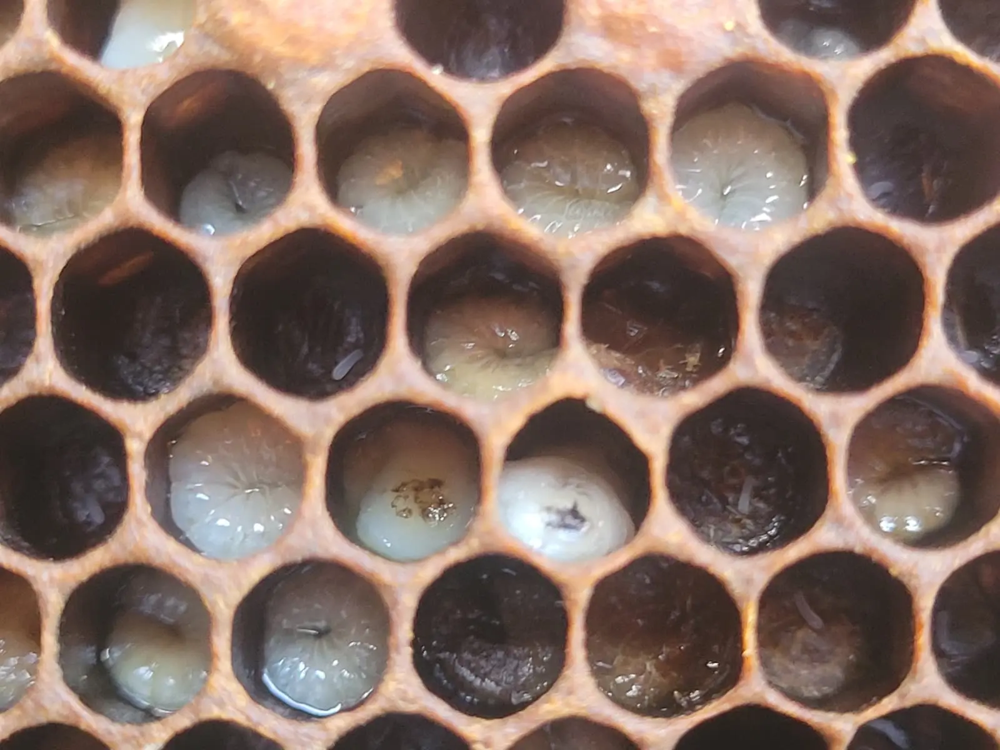

Last updated: 15 August 2026

Last updated: 15 August 2026
I Found a Spotty Brood Pattern During an Inspection — It Turned Out to Be European Foulbrood
During a recent inspection of my apiary, I noticed something that did not look right. I have four hives in the same apiary. The first and fourth colonies appeared to be behaving normally, with reasonable activity at the entrance and a good brood pattern during inspection.
The second and third colonies, however, seemed unusual from the start. Before I even opened the hives, the entrance activity was noticeably lower than the other colonies. There was only the occasional bee entering or leaving, while the neighbouring hives were far more active.
At first glance, it would have been easy to think the colonies were simply weaker or slower than the others. But once I opened them up and looked at the brood, the signs became more concerning.
The First Warning Sign Was Low Hive Activity
Low entrance activity does not automatically mean disease. A colony may appear quiet because of weather, time of day, forage conditions, queen issues, recent swarming, or a naturally smaller population.
However, when several colonies are in the same apiary and only one or two are much quieter than the rest, it is worth paying closer attention. Comparing colonies side by side can be very useful because they are experiencing the same weather and local forage conditions.
In this case, the contrast was obvious. Two colonies looked active and normal, while the other two were much quieter. That was the first sign that something needed a closer look.
What I Found Inside the Hive
One of the affected colonies was on a double brood setup. The lower brood box was full of stores but had very few bees. The upper brood box only had around two to three frames of bees.
The queen was found quickly and eggs were present, which showed that the colony was not queenless. However, the brood that was present did not look right.
The brood pattern was very spotty. There were sealed and unsealed brood cells mixed together, with many gaps where I would normally expect a more consistent pattern. Some larvae were twisted in the cells, and some appeared slightly yellow rather than healthy pearly white.
That combination of signs made me stop and look much more carefully.
What Should a Healthy Brood Pattern Look Like?
A healthy brood pattern is usually one of the clearest signs of a strong, well-functioning colony. In a healthy colony, the brood area often appears fairly solid and organised, with eggs, larvae and sealed brood developing in a regular pattern.
There may still be the odd empty cell. That is normal. No brood pattern is perfect. However, a good brood pattern should generally look consistent, with large areas of similar-aged brood and only occasional gaps.
Healthy larvae should normally look pearly white, plump, shiny and curled neatly in the bottom of the cell. When larvae appear twisted, discoloured, melted, sunken, or uneven in development, it can be a warning sign that something is wrong.
What Is a Spotty Brood Pattern?
A spotty brood pattern is where the brood nest looks uneven or patchy, with empty cells scattered through areas of brood. Instead of a solid, regular pattern, the frame may show gaps, mixed stages of brood and an irregular appearance.
A spotty brood pattern is not a diagnosis on its own. It does not automatically mean European Foulbrood, American Foulbrood, or any other specific disease.
Possible causes of a spotty brood pattern include:
- A failing or poorly mated queen
- Interrupted laying
- Chilled brood
- Varroa-related damage
- Poor nutrition or stress
- Brood disease
- European Foulbrood
- American Foulbrood
This is why it is important not to jump to conclusions, but also not to ignore the signs. A spotty brood pattern should always make the beekeeper slow down and inspect more carefully.
The Larvae Did Not Look Right

The brood pattern was concerning, but the larvae were the biggest warning sign for me.
Some larvae appeared twisted within the cells. Some looked slightly yellow rather than pearly white. The overall appearance was uneven and unhealthy compared with what I would expect to see in a strong colony.
Healthy larvae should look clean, bright and well-fed. When larvae become discoloured, twisted, melted down or irregular in appearance, it can suggest a serious brood problem.
At this stage, I could not confirm the cause myself. But I knew enough to realise that this was not something to ignore or guess at.
Why I Contacted the Bee Inspector
Because European Foulbrood and American Foulbrood are serious notifiable bee diseases, I contacted the Bee Inspector for advice.
This is an important step. If you suspect a notifiable brood disease, do not try to manage it quietly yourself. Do not move frames between colonies, do not sell or give away equipment, and do not assume it is only a queen problem.
The Bee Inspector came out, inspected the colony and took samples for testing. A few days later, I was notified that the samples were positive for European Foulbrood.
Although the result was disappointing, I was glad I had acted quickly. If I had ignored the signs, the disease could have remained in the apiary for longer and potentially created a greater risk to other colonies.
European Foulbrood: What Happened Next?
Once European Foulbrood was confirmed, the management options were discussed. Depending on the circumstances, colonies may be dealt with by shook swarm or by destruction.
A shook swarm involves moving the adult bees onto clean equipment and new foundation, while infected comb is removed and destroyed. This may be suitable in some cases, particularly where the colony is strong enough and the level of infection allows it.
In other situations, especially where the colony is weak or infection is more serious, destruction may be required. In my case, the decision was made that the affected colonies would be destroyed and the bees euthanised, with infected material burned.
That is not an easy outcome for any beekeeper, but controlling the spread of disease has to come first.
Why Clean Equipment Matters
This experience has made me even more careful about hygiene and equipment cleaning. Disease can be spread by bees, robbing, drifting and swarming, but beekeepers can also spread problems through poor biosecurity.
Hive tools, gloves, smokers, frame rests, nuc boxes, feeders and other equipment can all move material from one colony to another. If equipment is not cleaned between colonies, it can increase the risk of spreading disease around an apiary.
I understand that some apiaries are remote and it is not always convenient to carry extra cleaning equipment. Even so, I now make a point of taking cleaning materials with me when inspecting. For me, that includes a bucket, water, soda crystals for cleaning and a suitable disinfectant such as bleach for equipment where appropriate.
Important cleaning note
Cleaning and disinfecting should be done safely. Do not casually mix cleaning chemicals together. Use products according to their instructions, keep them labelled, and rinse equipment where needed. Soda crystals can be useful for removing wax, propolis and dirt, while bleach or other approved disinfectants may be used separately for disinfection where suitable.
The key point is that disinfection works best after physical dirt, wax and propolis have been removed. A dirty hive tool dipped quickly into disinfectant is not the same as properly cleaned equipment.
Good hygiene does not guarantee you will never face brood disease, but it reduces avoidable risk and is one of the simplest things beekeepers can control.
My Current Apiary Hygiene Routine
Since this inspection, I have tightened up my routine. I now try to think about hygiene before I start opening colonies rather than afterwards.
My current approach is simple:
- Inspect healthy-looking colonies before suspect colonies where possible.
- Avoid moving frames between colonies unless there is a clear reason.
- Clean hive tools regularly during inspections.
- Use soda crystals and water to help remove wax, propolis and debris.
- Use disinfectant appropriately and safely where needed.
- Keep suspect equipment separate.
- Follow Bee Inspector advice if disease is suspected or confirmed.
It is easy to become casual with equipment when inspections are busy, but disease control depends on good habits. A few extra minutes cleaning tools and keeping equipment separate can make a real difference.
Lessons I Learned from This Inspection
The biggest lesson from this experience is that the first sign of a serious problem may be subtle. In my case, it started with two colonies that were quieter than the others.
Once I opened the hives, the low bee numbers, spotty brood pattern and abnormal larvae made it clear that something was not right.
The key lessons I took from this were:
- Compare colonies within the same apiary.
- Do not ignore unusually low activity.
- Learn what healthy brood should look like.
- Treat spotty brood as a warning sign, not a diagnosis.
- Look carefully at larval colour, position and condition.
- Contact the Bee Inspector if you are concerned.
- Keep equipment clean and avoid spreading material between colonies.
It would have been easy to blame the queen or assume the colony was simply weak. But the brood told a different story. Taking action quickly meant the problem was properly investigated and confirmed.
When Should You Worry About a Spotty Brood Pattern?

You should take a spotty brood pattern seriously when it appears alongside other warning signs.
These may include:
- Low colony strength
- Very quiet entrance activity compared with nearby hives
- Twisted larvae
- Yellow, brown or melted-looking larvae
- Uneven brood development
- Sunken or abnormal cappings
- Unusual smell
- Larvae dying before being sealed
Not every case will be European Foulbrood. But if something feels wrong, it is better to seek advice early than wait until the problem becomes more serious.
Final Thoughts
This was not the inspection result I wanted. No beekeeper wants to find European Foulbrood in their apiary, and the decision to destroy colonies is difficult.
However, this experience reinforced how important regular inspections, good observation and clean equipment really are. Spotty brood should never be dismissed without careful thought, especially when combined with low colony activity and abnormal larvae.
If you see signs that concern you, do not guess. Stop, take a closer look, keep equipment separate and contact your Bee Inspector for advice.
Early action protects your own bees, nearby colonies and the wider beekeeping community.
Frequently Asked Questions
No. A spotty brood pattern can be caused by several issues, including queen problems, chilled brood, varroa damage, poor nutrition or disease. It should be treated as a warning sign rather than a diagnosis.
Healthy brood usually appears in a fairly solid, regular pattern. Larvae should look pearly white, shiny, plump and curled neatly in the bottom of the cell.
The first signs were unusually low hive activity, reduced bee numbers, a very spotty brood pattern and larvae that appeared twisted and slightly yellow in some cells.
Yes. European Foulbrood is a serious notifiable bee disease. If you suspect it, contact the Bee Inspector or National Bee Unit for advice rather than trying to manage it yourself.
Depending on the colony and level of infection, control may involve shook swarm or destruction. The appropriate action should be guided by the Bee Inspector.
Hive tools, gloves, feeders, nuc boxes and other equipment can spread contamination between colonies if they are not cleaned properly. Good hygiene helps reduce avoidable disease risk.
Join the Conversation
Beekeeping is all about learning from one another. Follow BeezKnees for more inspection notes, seasonal observations and practical beekeeping tips.